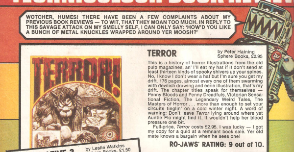

A media review series focusing mainly on literature, and hosted by Ro-Jaws.
| Title | Parts | Pages | w indicates a wraparound coverCovers | Year(s) | Issues | Writer | Artist | Colourist | Letterer |
|---|---|---|---|---|---|---|---|---|---|
| Books | 1 | 1 | 0 | 1980 | 147 | Ro-Jaws | promo covers | [b&w] | n/a |
| Books | 1 | 1 | 0 | 1980 | 148 | Ro-Jaws | promo covers | [b&w] | n/a |
No supertitle.Ro-Jaws' Technicolor Book Review | 1 | 2 | 0 | 1980 | SFS3 | Ro-Jaws | & book covers. Kevin O'Neill | <-- | n/a |
No supertitle.Ro-Jaws' Technicolor Book Review | 1 | 2 | 0 | 1981 | SFS4 | Ro-Jaws | & book covers. Kevin O'Neill | <-- | n/a |
Subtitled: "Free Stuff For Kids".Ro-Jaws' Book Review | 1 | 0.5 | 0 | 1981 | 222 | Ro-Jaws | n/a | [b&w] | n/a |
No supertitle.Ro-Jaws' Technicolor Book Review | 1 | 2 | 0 | 1982 | SFS5 | Ro-Jaws | & book covers. Kevin O'Neill | <-- | n/a |
| year | episodes | pages |
| 1977 | 0 | 0 |
| 1978 | 0 | 0 |
| 1979 | 0 | 0 |
| 1980 | 3 | 4 |
| 1981 | 2 | 2.5 |
| 1982 | 1 | 2 |
| 1983 | 0 | 0 |
| 1984 | 0 | 0 |
| 1985 | 0 | 0 |
| 1986 | 0 | 0 |
| 1987 | 0 | 0 |
| 1988 | 0 | 0 |
| 1989 | 0 | 0 |
| 1990 | 0 | 0 |
| 1991 | 0 | 0 |
| 1992 | 0 | 0 |
| 1993 | 0 | 0 |
| 1994 | 0 | 0 |
| 1995 | 0 | 0 |
| 1996 | 0 | 0 |
| 1997 | 0 | 0 |